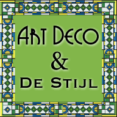
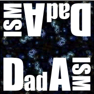
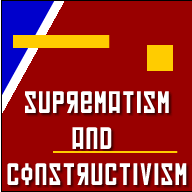

Orientation in Surrealism
Origin
 Surrealism is alive and well, even today. However, this introduction shows the initial iteration of the movement. The movement has evolved out of this initial philosophy and into a cultural movement all its own.
Surrealism is alive and well, even today. However, this introduction shows the initial iteration of the movement. The movement has evolved out of this initial philosophy and into a cultural movement all its own.
Out of the ashes of Dada comes Surrealism. André Breton, a medical orderly in an internal psychic war became interested in Freud's theory of the unconscious, and used it to create a definition for Surrealism. Surrealists are interested in dreams as the art of uncovering the unconscious. Originally a literary movement, there are two schools of Surrealism.
Naturalistic Surrealism actively pursues dreams, creating representational scenes that have changed into a dream state or nightmare image. These artists recorded dreams and created using traditional techniques. Freud said the dream is a construction of bits from the waking experience. Jung says dreams uncover other realities and you can dream of something that is not in your waking life. These two psychological theories informed the artists in marrying together inner and outer "realities". Biomorphic Surrealism uses automatic drawing and chance techniques to show that rationalism is overrated as the way to knowledge. Using intuition, dreams and unconscious realms, artists sought to create without creating, to allow the mind to bring out unconscious creations. The word "Surrealism" itself means "super reality" in French, and artists used the theory and methods to "Free" themselves from the mind control they believed society and it's inherent structure had placed on them.
Related articles- Who Was Carl Jung? (brainz.org)
- Sigmund Freud's Psychology and Carl Jung's Method of Dream Interpretation (socyberty.com)
Period
1924 onward
Aesthetic Characteristics
Strange, dreamlike juxtapositions of representational objects.
Influential Artists
Paul Klee
 Twittering Machine is a single flat plane with images on the surface. It's more about the surfaces than depth. If one brought depth into this work, it would become a representation. Abstract surrealism is not about representation, it is partly abstract, partly figurative. It contains beings from another world, with exceptions of a few figures. There are some dream figures, but nothing you would see in a dream. The line shows internal landscape. It is a physiological projection of inner space (inscape). There's no focal point and no logic to the forms. It is an irrational set of relations.
Twittering Machine is a single flat plane with images on the surface. It's more about the surfaces than depth. If one brought depth into this work, it would become a representation. Abstract surrealism is not about representation, it is partly abstract, partly figurative. It contains beings from another world, with exceptions of a few figures. There are some dream figures, but nothing you would see in a dream. The line shows internal landscape. It is a physiological projection of inner space (inscape). There's no focal point and no logic to the forms. It is an irrational set of relations.
Max Ernst
 Two children Threatened by a NightingaleThis piece has a poetic title, represents a bad dream, illusionistic space, uses collage objects, making it seam real. Ernst was an extremely interesting surrealist because he embodied both naturalistic and biomorphic surrealism in his work. He never trained as an artist, but was interested in experimentation. To Ernst, art was knowledge, a means to an end rather than an end to itself. He strove to make the unreal, real. He tries to discredit waking reality. This piece is of a nightmare.
Two children Threatened by a NightingaleThis piece has a poetic title, represents a bad dream, illusionistic space, uses collage objects, making it seam real. Ernst was an extremely interesting surrealist because he embodied both naturalistic and biomorphic surrealism in his work. He never trained as an artist, but was interested in experimentation. To Ernst, art was knowledge, a means to an end rather than an end to itself. He strove to make the unreal, real. He tries to discredit waking reality. This piece is of a nightmare.
Other Notable Surrealists
Results
Surrealism has had great stretch throughout most, if not all, of cultural and artistic endeavors. New techniques were formed in the era, giving artists new tools to visualize unconscious thoughts and fantasies.
Test Your Surrealism Knowledge
-
Surrealism was started by Sigmund Freund and Carl Jung.
- True
- False
-
Which artist is arguably the most famous Surrealist?
- Paul Klee
- Salvador Dali
- Max Ernst
-
Which of these words best describes the aesthetic characteristics of Surrealism?
- cheery
- realistic
- dreamy
- colorful
- dreamlike juxtapositions
Think you know Art in the 1920's? Take the test!
Match the images with the keyword boxes by dropping the image underneath the keywords.
anti art, rebellion against conventional thought and sought to bring absurdity into all aspects of existence. DuChamp, Schwitters and Man Ray were influential. Chance associations and found object art.
dream art, interested in dreams as the art of uncovering the unconscious, automatic drawing and chance techniques, representational objects. Paul Klee and Max Ernst were notables. New tools to visualize the unconscious.
political art, geometric abstract art, not about a feeling, but of a sensation, tectonics, texture, and construction, elemental shapes and color to create form. Malevich, Lissinsky and Rodchencko art defined the movement.
Faith in Machines, designs for cars, trains, ships, planes and buildings, integration of art in life. Georges Vantongerloo, Piet Mondrian and Gerrit Rietveld were important artists. Universal laws of equilibrium and harmony for art, streamlined, geometric shapes. Utopian society created through art.


